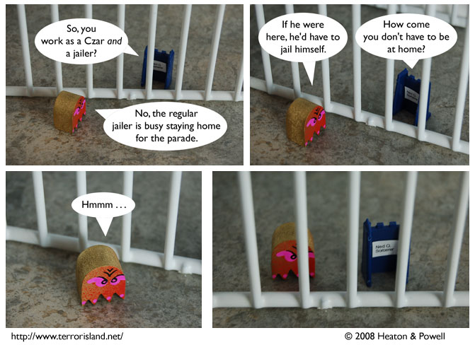

Strip #248
— Friday, January 11, 2008
This honestly did not occur to Blueteen before.
Notes, Thoughts, &c.
Ben’s Notes
This is going to be the best parade ever.
Lewis’s Notes
Either Blueteen doesn’t have absolute power, or Lord Acton was wrong
when he said that absolute power corrupts absolutely. How many leaders
would, when confronted with their own failures to observe the law of the
land, voluntarily incarcerate themselves? Only one. And that is why I
am declaring my support for Blueteen for President Pharaoh of the
United States of America in 2008.